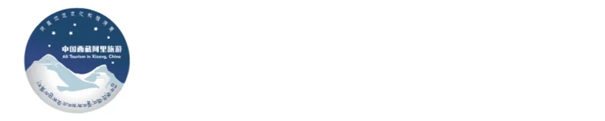
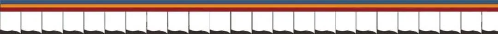
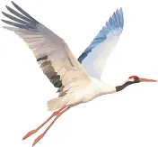
镜观高原
相融之美

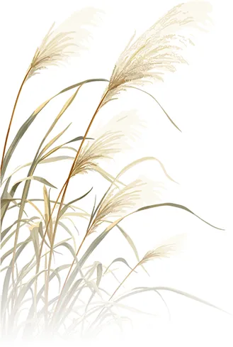
在海拔4500米的阿里，一位藏族摄影师用镜头聚焦高原野生动物、人文风貌与西藏壮美风光，用光影定格高原生态之韵，讲述藏地人文与自然共生的美好故事。
来吧，现在跟随小编一起欣赏阿里本土摄影师嘎玛努布镜头中的相融之美 。
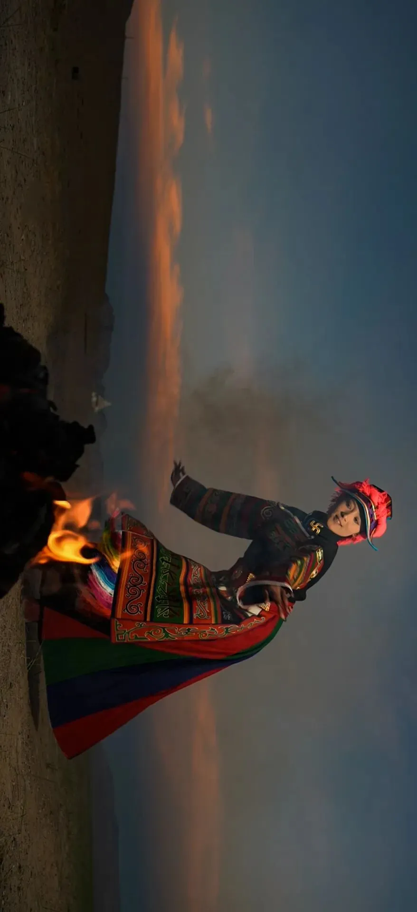
暮色舞者
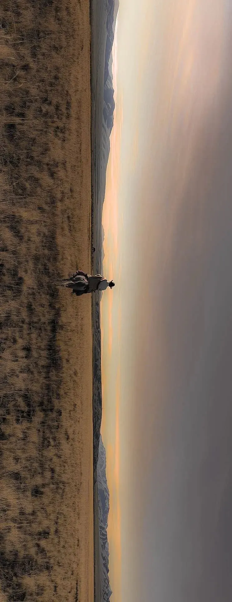
远行
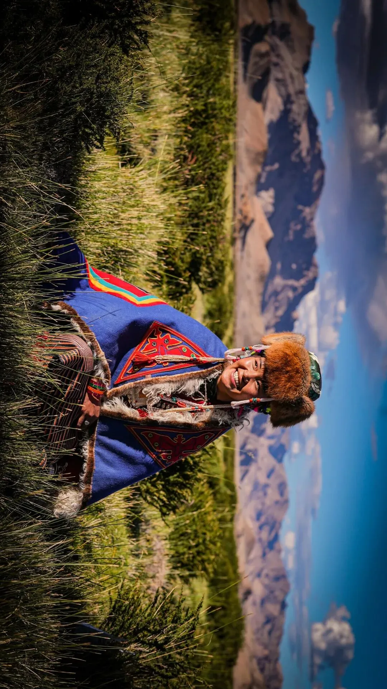
迎风一笑
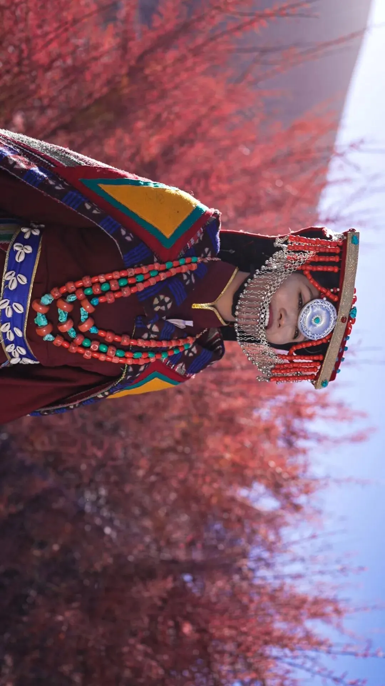
红柳姑娘
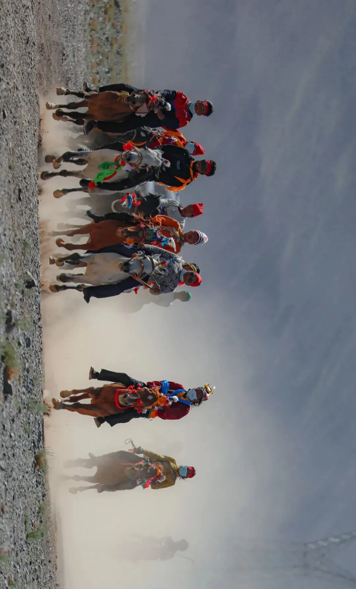
赛马节
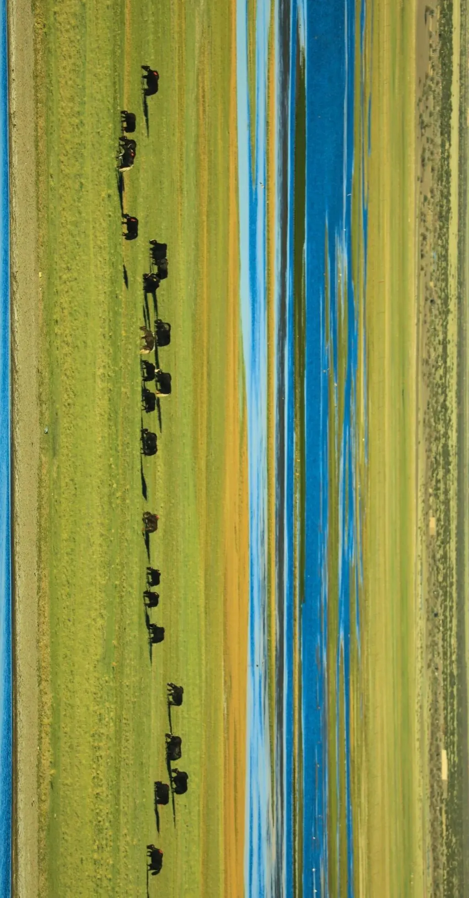
宁静
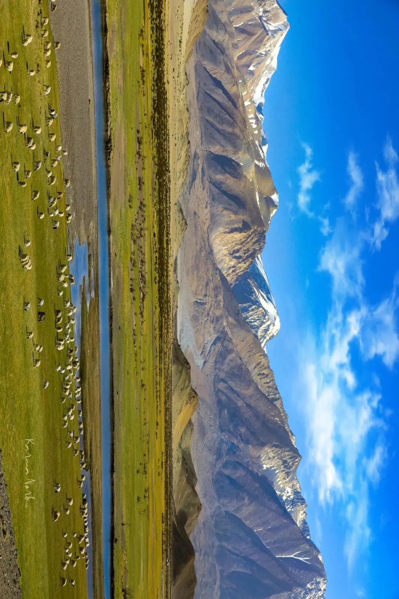
绿水青山
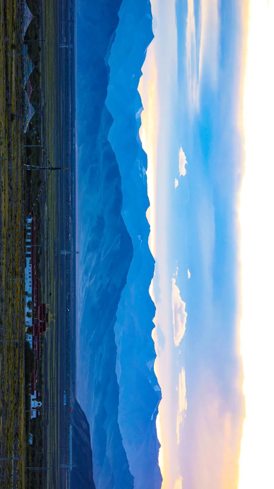
加木拉康
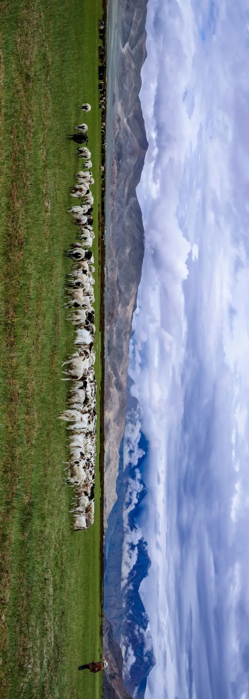
天边牧人
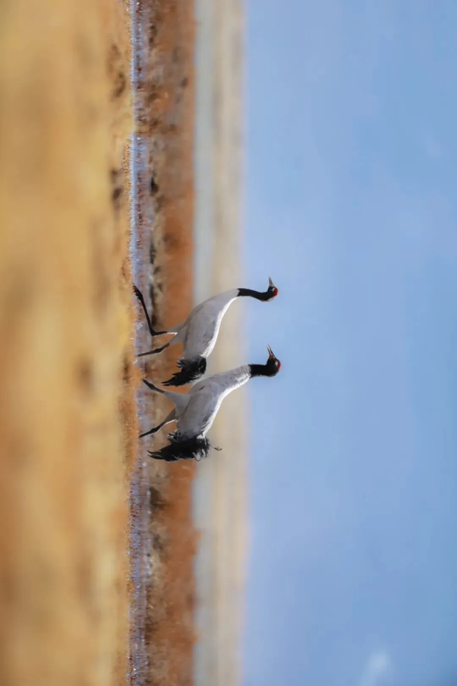
守护
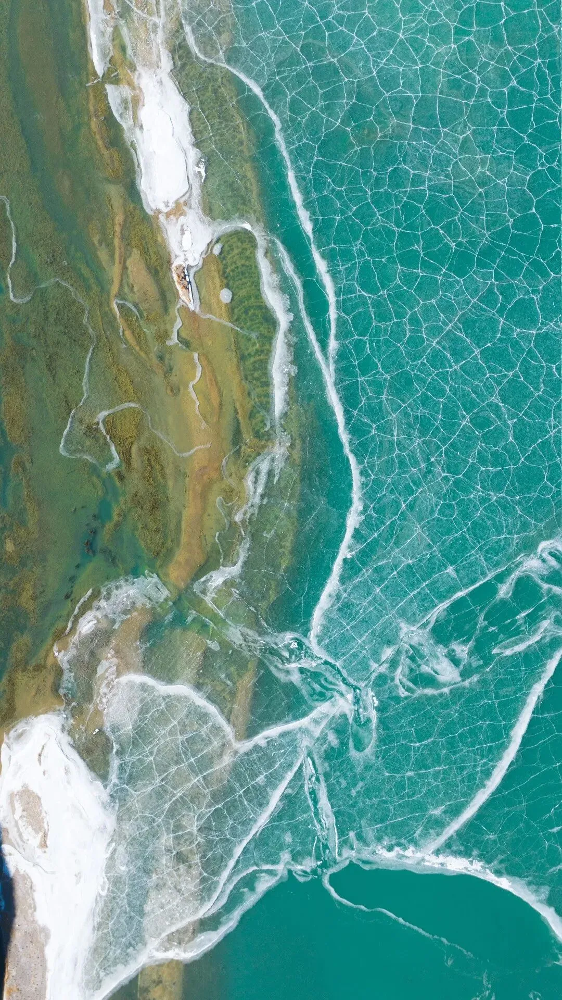
冬夏同辉
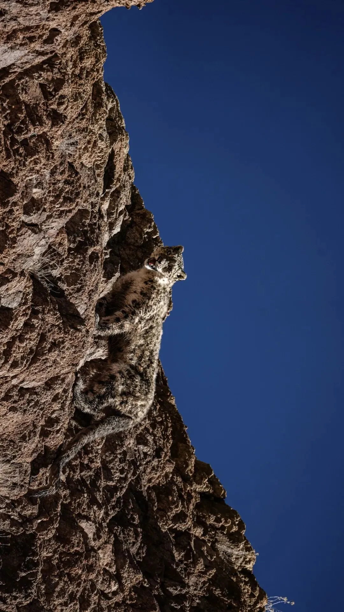
雪豹
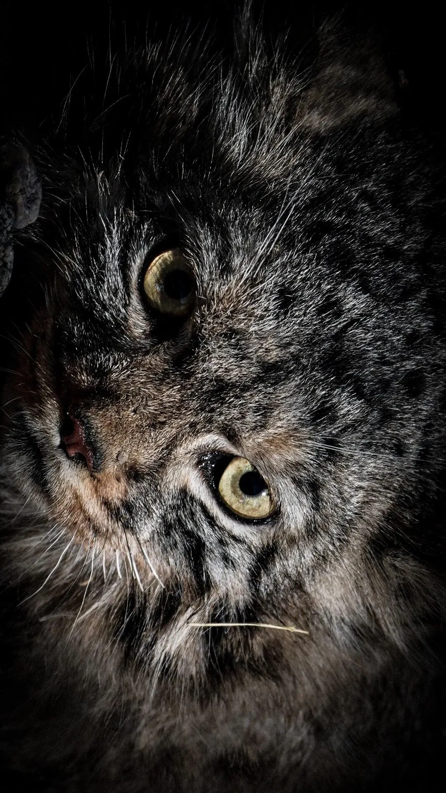
兔狲
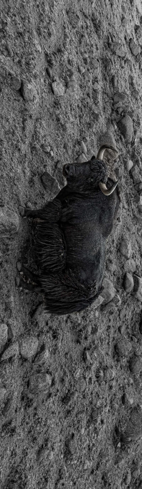
野牦牛
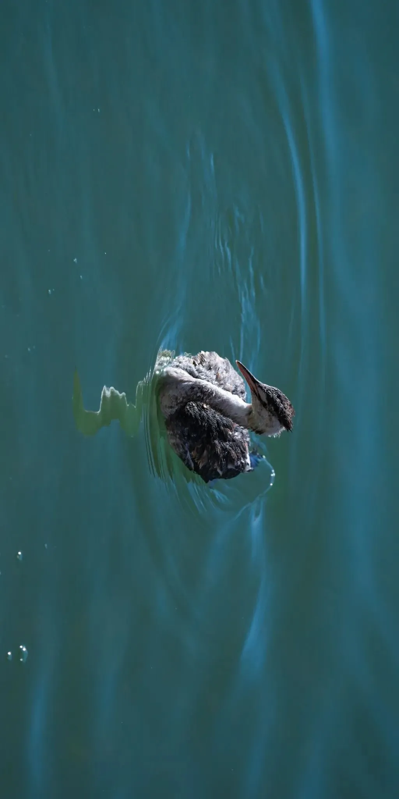
凤头䴙䴘
暗夜公园
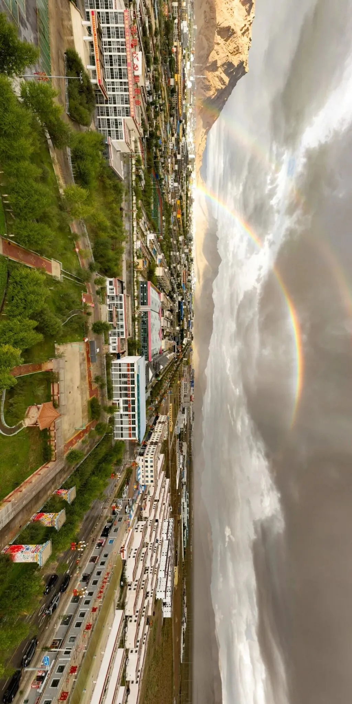
双虹
嘎玛努布 西藏噶尔县人， 现就职于噶尔县融媒体中心。西藏摄影家协会会员，阿里地区摄影家协会会员，视觉中国签约摄影师。
2025年度荣获发现世界之美——世界旅游摄影大赛（自然风光组）银奖，“高原红石榴·共筑中国梦”第五届民族团结摄影二等奖，西藏珠穆朗玛摄影大赛入围奖，中国西藏阿里旅游特约摄影师等众多奖项。
· 更多精彩 · 请关注“西藏阿里文旅”视频号 ▼▼▼
来源：阿里文联 编辑：何思瑜 责编：陈利 终审：米玛桑珠
来源：阿里文联 编辑：何思瑜 责编：陈利 终审：米玛桑珠

Through His Lens: Seeing the Beauty of Harmony Between Humans and Nature
Source: Tibet Ngari Cultural Tourism | Date: March 26, 2026
At 4,500m in Ngari, Tibetan photographer Gama Norbu uses his lens to capture plateau wildlife, cultural landscapes, and Tibet's magnificent scenery.
Photo Gallery: Dancer at Dusk, Journey Far Away, Smile in the Wind, Red Willow Maiden, Horse Racing Festival, Tranquility (Zhaxigang Wetland), Lucid Waters and Lush Mountains, Jiamulakang, Herdsman at the Horizon, Guardianship, Winter and Summer Shine Together, Snow Leopard, Pallas's Cat, Wild Yak, Great Crested Grebe, Dark Sky Park, Double Rainbow.
About the Photographer: Gama Norbu, born in Gar County, Tibet. Member of Tibet Photographers Association and Ngari Photographers Association. Visual China contracted photographer.
Awards (2025): Silver Award — World Tourism Photography Competition. Second Prize — National Unity Photography Competition. Finalist — Tibet Everest Photography Competition. Specially Appointed Photographer for China Tibet Ngari Tourism.